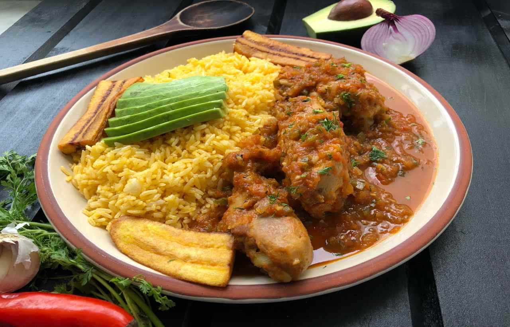

Seco de Pollo (chicken stew)

The best chicken stew recipe ever... it even has alcohol!
This one is a popular dish in Ecuador that gives you that happy feeling, a great home cooked meal.
Ingredients
- 4 lbs. chicken pieces
- 2 tsp ground cumin
- 2 tsp ground achiote
- 3 tablespoons of oil
- 1 onion (cut into chunks)
- 8 garlic cloves
- 2 cups beer
- 1 cup orange juice
- 5 tomates (quartered)
- 2 bell peppers (remove seeds, cut into chunks)
- 1 bunch cilantro
- 1 bunch parsley
- 2 tsp dry oregano
- Salt and pepper to taste
Insructions
- Rub chicken pieces toghter with ground achiote, cumin, salt and pepper.
- Blend beer and orange juice with the onion chunks, garlic cloves, tomates, peppers, cilantro, parsely, oregano into a smooth puree.
- Heat oil and brown chicken pieces.
- Pour the blended mix over the chicken and bring to a boil.
- Reduce heat and cook on low for about an hour.
- Once sauce has thickened, add in some more chopped cilantro and parsley.
- Serve with yellow rice, fried ripe plantains and avocado slices.
Back to home page